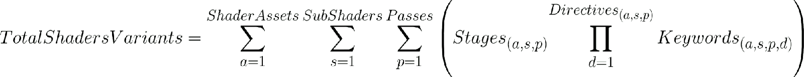
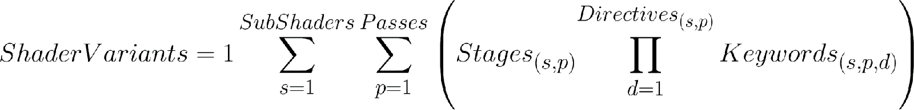
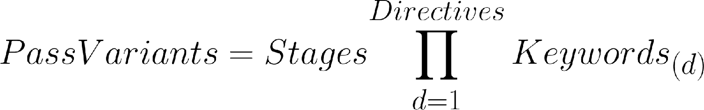
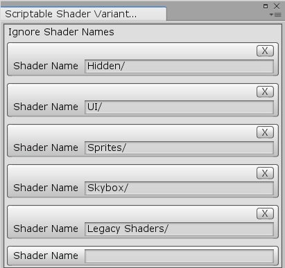

只要是使用 Unity 一段時間的開發者都會發現
隨著專案進入後期、複雜度增加、素材變多…等因素
建置時間會成正比成長
在過往的版本中
開發者無法針對 Compiling Shader Variant 這個建置步驟進行任何處理
2018.2 beta 新增了 Scriptable Shader Variant Stripping 功能
能夠讓開發者在建置過程中控管 Shader Variant
減少建置時間與檔案大小
Shader Asset：常見的 Shader 資源，包含 Property、SubShader、Pass
Shader Snippet：Shader 片段
Shader Stage：渲染管線的特定階段，一般指 Vertex Shader 及 Fragment Shader
Shader Keyword：共有兩種 Keyword 用法，multi_compile 及 shader_feature
Shader Keyword Set：Keyword Set 是關鍵字的特定集合，用於識別 Shader 啟用哪些關鍵字
Shader Variant：根據關鍵字所形成的 Shader Variant
Uber Shader/Mega Shader：可生成多個 Shader Variant 的 Shader
如何計算 Shader Variant 數量



範例
#pragma multi_compile A1 A2 A3 //第一種 Directive，有三個不同 Keyword
#pragma multi_compile B1 B2 B3 B4 //第二種 Directive，有四個不同 Keyword
ShaderVariants 數量 = 3 x 4 = 12
| 定義方式 | |||
|---|---|---|---|
| 定義類型 | 定義語句 | 作用範圍 | 變體生成 |
| shader_feature | #pragma shader_feature | shader 本身 | 開發者自定義 |
| multi_compile | #pragma multi_compile | 大多數 Shader | 自動生成所有變體 |
| 定義語句對照表 | ||
|---|---|---|
| 定義語句 | 預設 Keyword | 生成 Shader Variants |
| #pragma shader_feature A | no keyword | 開發者自定義 |
| #pragma shader_feature _ A | no keyword | 開發者自定義 |
| #pragma shader_feature A B C | A | 開發者自定義 |
| #pragma shader_feature _ A B C | no keyword | 開發者自定義 |
| #pragma multi_compile A | A | A |
| #pragma multi_compile __ A | no keyword | no keyword、A |
| #pragma multi_compile A B C | A | A、B、C |
| #pragma multi_compile __ A B C | no keyword | no keyword、A、B、C |
重點整理
shader_feature 只有在 Keyword Enable 的狀況下才會生成 Shader Variant
multi_compile 會自動生成所有 Shader Variant
所以大部分情況下會建議少用 multi_compile 改用 shader_feature
減少 multi_compile 過多導致 Shader Variant 暴漲的情形發生
1. 實作 IPreprocessShaders
2. 載入特殊 Shader 清單
3. 收集並載入專案中所有 Material
AssetDatabase.FindAssets
AssetDatabase.LoadAssetAtPath
4. 將每個 Material 所對應的 Shader 及 Keyword Set 紀錄下來
Material.shader
Material.shaderKeywords
5. 執行 OnProcessShader
6. 判斷 Shader Variant 是否合法
7. 判斷通過則保留，不通過則捨棄
重點紀錄
由於這個流程只能確保專案中所有的 Material 在打包後能正常使用
任何專案中非 Material 的 Shader，如：UI、Hidden、Legacy Shaders…等
需要額外進行處理
且在執行過程中若是使用 Material.EnableKeyword、Material.DisableKeyword、Shader.EnableKeyword、Shader.DisableKeyword 動態改變 Shader Keyword 也需要額外進行處理

因此簡單的製作了一個 ScriptableObject 用來讓開發者能夠自行定義特殊 Shader 清單
用來記錄需要特別處理的 Shader
基本包含 Hidden、UI、Sprites、Skybox、Legacy Shaders 這些常用的 Shader 列表
以及專案中有使用到的一些較為特殊的 Shader
| Optimized Mesh Data | Scriptable Shader Variants Stripping | 建置大小 (MB) | 建置時間 (s) | 節省時間 |
|---|---|---|---|---|
| O | X | 4980 | 1080.89 | 0% |
| O | O | 4971 | 922.39 | 14.68% |
| X | X | 5099 | 237.88 | 77.99% |
| X | O | 5094 | 180.55 | 82.30% |
在交叉測試後的數據中發現
影響建置時間最多的是 Player Settings 中的 Optimized Mesh Data 選項
此選項會在建置過程中解析所有 Shader Variant 中未使用的 Vertex Channel 並進行優化處理
使得同一個 Shader Variant 會在整個建置過程中不斷的被反覆檢查
如果專案有使用到這個參數的話
建議可以比較看看勾選前後是否對建置時間有明顯的改變
（測試版本為 Unity 2018.3，此問題已在 Unity 2019.3 中修正）
Unity Issue Tracker – Building project gets stuck on “Compiling shader variants” dialog when Lightweight Render Pipeline/Lit shader is compiling
Stripping scriptable shader variants – Unity Blog
Unity 2018.2新功能：可编程着色器变体移除
IPreprocessShaders.OnProcessShader
Shader变体收集与打包
对Shader Variant的研究(概念介绍、生成方式、打包策略)